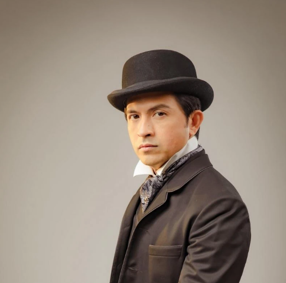
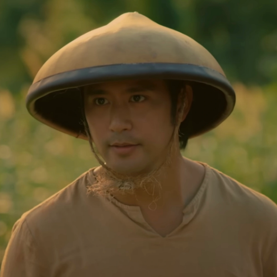
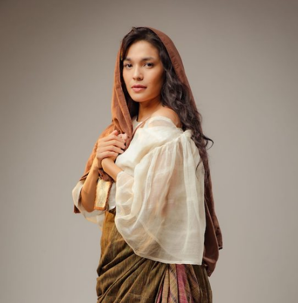
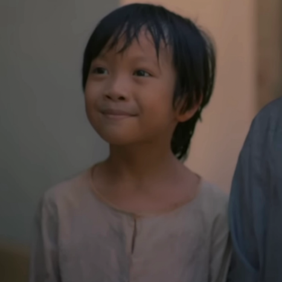
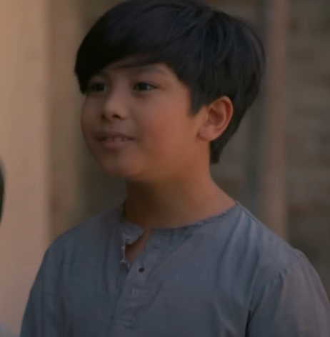
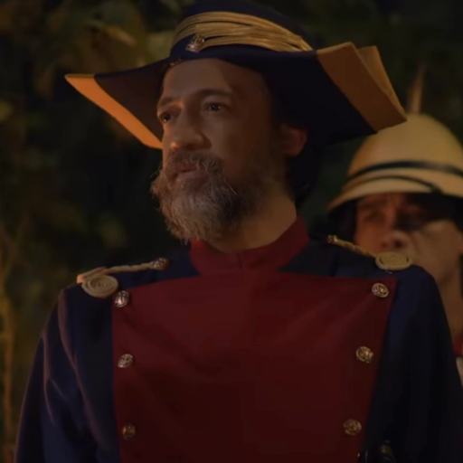

CHARACTERS IN NOLI ME TANGERE
|
Character |
Name |
Description |
|  |
Juan Crisostomo Ibarra y Magsalin |
Description of Crisostomo
- The son of Don Rafael Ibarra, he is a wealthy Mestizo
- Studied in Europe for 7 years
- In a romantic relationship with Maria Clara
|
 |
Maria Clara |
Description of Maria Clara
- Daughter of Kapitan Tiago and Donya Pia Alba
- Was raised by Kapitan Tiago's cousin, Tiya Isabel, after her mother died
at childbirth
- Extremely religious; dreamt of being a nun
|
|  |
Elias |
Description of Elias
- Elias was a friend and co-patriot of Crisostomo Ibarra
- He allied himself with Crisostomo after the latter saved his life
|
 |
Kapitan Tiago |
Description of Kapitan Tiago
- Kapitan Tiago is one of the wealthiest men in Binondo
- Kapitan Tiago owns large plots of land in Pampanga, Laguna, and San Diego
- Is the father of Maria Clara, and an old friend of Don Rafael
|
 |
Padre Damaso |
Description of Padre Damaso
- Padre Damaso is a greedy priest who used to serve San Diego
- He was a former friend Don Rafael Ibarra before partaking in the latter's imprisonment
- He was removed from San Diego after 23 years after an incident involving Don Rafael's body
|
 |
Padre Salvi |
Description of Padre Salvi
- Padre Salvi is the current curate of San Diego, and succeeded Padre Damaso
- He prefers financial penalties over physical punishments as compared to Damaso
- He possesses lustful feelings for Maria Clara
|
 |
Don Rafael Ibarra |
Description of Don Rafael
- Don Rafael Ibarra was one of the wealthiest men in San Diego and is Crisostomo's father
- He died of sickness in prison prior to acquittal while Crisostomo was in Europe
- He was an honest, God-fearing individual respected by many
|
 |
Pilosopo Tasyo |
Description of Pilosopo Tasyo
- Pilosopo Tasyo was an intelligent scholar of philosophy and an advisor to some townsfolk
- He was Sisa, Crispin and Basillio's neighbor
|
|  |
Sisa |
Description of Sisa
- Sisa was a San Diego resident and mother of the young Crispin and Basilio
- She went insane after the disappearance of her two children
|
|  |
Crispin |
Description of Crispin
- Crispin is the youngest son of Sisa
- He was the first of the two children to go missing
|
|  |
Basilio |
Description of Basilio
- Basilio is the older son of Sisa
- He was the one who found Sisa but was unable to save her from insanity right before her death
|
 |
Donya Victorina de Espadana |
Description of Donya Victorina
- Donya Victorina is the wife of Don Tiburcio
- She is a socialite interested in climbing the social ladder with her husband
|
 |
Don Tiburcio de Espanada |
Description of Don Tiburcio
- Don Tiburcio is the "ignorant Spaniard" of the story; a minor character
- He, along with his wife, is interested in climbing the social ladder
|
 |
Donya Consolacion |
Description of Donya Consolacion
- Donya Consolacion is the wife of the Alperes; a Filipina
- She has a reputation for overusing makeup
|
|  |
Alperes ng Gwardia Civil |
Description of the Alperes
- The Alperes is the commanding officer of the Gwardia Civil (Civil Guard)
- His wife is the elderly Donya Consolacion, a fan of makeup
|
 |
Tiya Isabel |
Description of Tiya Isabel
- Tiya Isabel is the cousin of Kapitan Tiago
- She served as the caretaker mother for the young Maria Clara after her mother died shortly after childbirth
|